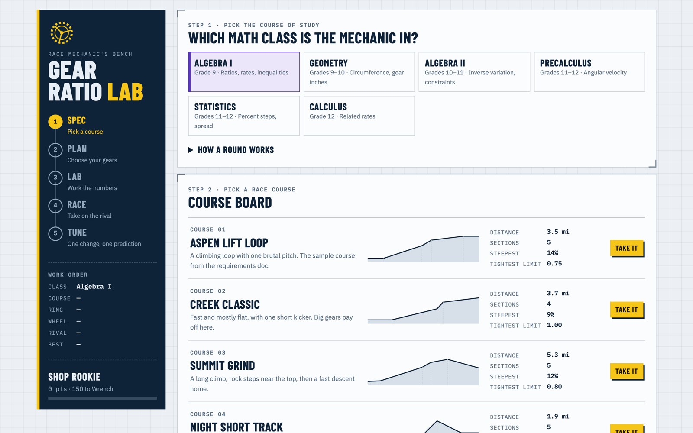

Gear Ratio Lab
A race-mechanic game: students choose a chainring, wheel and cogs for each section of a mountain-bike course, work out the ratios, speeds and times, then race their setup against a rival's.

overview
Students play the mechanic for a mountain-bike racer. Each course section lists its grade, the rider's cadence and a push limit — the biggest gear ratio the rider can turn there. Go over it and the rider walks; every cog change costs time. Students work the numbers for every section, race their setup against a rival's on the course profile, then change one part, predict the new time and test the prediction.
The same game runs at six levels: Algebra I (ratios, rates, inequalities), Geometry (circumference, gear inches), Algebra II (inverse variation, constraints), Precalculus (angular velocity), Statistics (percent steps, spread) and Calculus (related rates).
details
- Spec — pick a race course.
- Plan — choose a chainring, a wheel and one rear cog per section.
- Lab — work out the ratio, distance per crank turn, speed and time for every section, plus one problem for the class.
- Race — the setup races the rival's on the course profile.
- Tune — change one part, predict the new time, test it, and answer the mechanic's question.